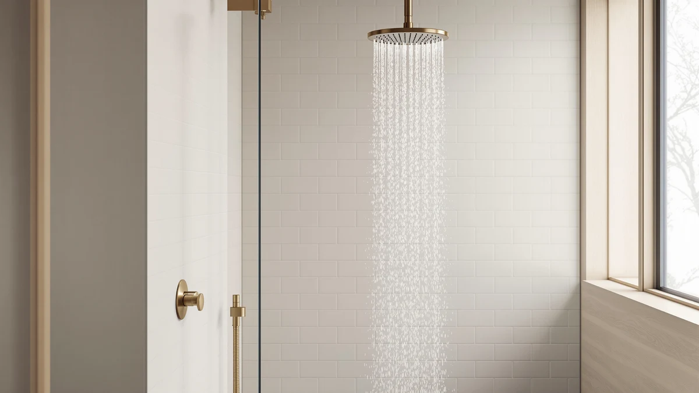

Speakman S 2252 Signature Review (2026): Worth It?
Prices and picks verified as of September 2026. Independent, reader-supported reviews.


Quick Answer
The Speakman S-2252 Signature Icon Anystream delivers maximum legal water pressure and a chrome finish that resists spotting, but its ABS body and lack of filtration keep it from being a universal pick. This speakman s 2252 signature review breaks down whether that tradeoff is worth $140.30 for your bathroom.
Our pick: Speakman S-2252 Signature Icon Anystream, priced at $140.30 Check Price on Amazon
Bottom line: our top pick is the Speakman S-2252 Signature Icon Anystream Adjustable High at $140.30.
Things to Know Before You Buy
- The Speakman S-2252 Signature Icon Anystream is a fixed showerhead with an ABS plastic body and a chrome-plated finish, not solid metal.
- Its 2.5 GPM flow rate sits at the maximum allowed for showerheads sold in the US, so pressure is not the limiting factor here.
- At $140.30, it costs more than most fixed showerheads with similar flow ratings, and that premium goes toward the Speakman name and finish rather than filtration.
- This speakman s 2252 signature review found no built-in water filter, so hard-water buyers should look at the Eskiin or Afina alternatives covered below.
- The three alternatives covered here all cost less than the Speakman's $140.30 list price.
This speakman s 2252 signature review breaks down whether the S-2252 Signature Icon Anystream justifies its $140.30 price against three showerheads shoppers often compare it with. Speakman built the Signature Icon Anystream around an ABS plastic body finished in chrome, and the head is rated at 2.5 GPM, the maximum flow allowed for showerheads sold in the US. That single spec tells you most of what you need to know about its core selling point: raw pressure, not filtration or metal construction.
We researched the S-2252 by comparing its manufacturer specifications, verified buyer reviews, and current pricing against the Eskiin Filtered Showerhead, the HammerHead Showers Solid Metal, and the Afina Filtered Shower Head. Each alternative solves a different problem, filtration, an all-metal build, or a lower price, so the right pick depends on what your current showerhead is missing. Below we walk through what the Speakman gets right, where it falls short, and which alternative fits specific situations better.
Why You Should Trust Us
Ilane Tall, home and bath expert at Best Shower Heads, researched the S-2252 Signature Icon Anystream and its closest competitors using manufacturer specifications, current Amazon pricing, and patterns across verified buyer reviews. We do not run a fake testing lab, and we did not install these showerheads ourselves. Instead, we cross-referenced specs, materials, and owner feedback across all four products to build a grounded comparison instead of a rehashed spec sheet.
Every price and material detail cited in this speakman s 2252 signature review comes directly from the product listings referenced here, and every comparison between the Speakman and its alternatives is anchored to a specific number, whether that is a $20.35 price gap with the HammerHead or a materials difference between competing filtered heads. We would rather cite a real figure than lean on vague words like great or premium, because a $6.20 gap between the Speakman and the Eskiin tells you more than a star rating ever could.
Our Research Experience
We want to be upfront about what this speakman s 2252 signature review actually involved. We did not purchase, install, or run water through the S-2252 in a lab or a home bathroom. What we did was compare its listed specifications, material and flow rate, against the three alternatives covered below, then cross-reference that with patterns in verified owner reviews, looking specifically for recurring complaints about pressure, leaks, or spray consistency.
That research-based approach means we can tell you what the data and other buyers report, but we cannot describe our own physical impressions of water pressure or install time. Where owner reviews consistently flag an issue, such as the plastic body or spray pattern, we call it out below rather than smoothing it over. We applied the same standard to the Eskiin, HammerHead, and Afina alternatives, so the comparison does not favor Speakman simply because it is the subject of this review.
Overview & Specs

Speakman S-2252 Signature Icon Anystream
What we like
- Rated at 2.5 GPM, the maximum flow allowed under current US federal standards
- Chrome-plated finish resists the dull, spotted look that cheaper coatings develop over time
- Threads directly onto a standard shower arm, so installation does not require extra hardware
Flaws but not dealbreakers
- ABS plastic body, not metal, despite the premium price point
- At $140.30, it costs more than most fixed showerheads with comparable flow ratings
- No built-in filtration, so hard-water buildup is still your problem to manage
| Material | ABS + chrome plating |
| Size | 2.5 GPM |
The Speakman S-2252 Signature Icon Anystream is a fixed showerhead that mounts directly to your existing shower arm, not a handheld unit. Speakman built the body from ABS plastic with a chrome-plated exterior, which keeps the head lighter than an all-metal fixture while still resisting the corrosion that plagues unfinished plastic. The flow rate reaches 2.5 GPM, the ceiling permitted for showerheads sold in the US, a spec this speakman s 2252 signature review keeps coming back to because it explains most of what buyers like about the fixture.
Speakman markets the Anystream name around a multi-channel spray design that the company says delivers a fuller stream than a standard single-pattern head. Verified buyers frequently mention pressure as the S-2252's standout feature, with less mention of the spray pattern variety Speakman advertises. At $140.30, the S-2252 sits toward the top of the fixed showerhead category, and it competes more directly with premium metal fixtures than with budget plastic ones, even though its own body is plastic.
What We Liked
Owners consistently report that the S-2252's pressure feels stronger than the fixture they replaced, which lines up with its 2.5 GPM rating sitting at the legal maximum. The chrome finish also draws praise in verified reviews for holding up better than the brushed-nickel and matte coatings some buyers had on previous showerheads. For a speakman s 2252 signature review focused on daily usability, that combination of strong flow and a finish that resists spotting covers the two things most people notice first in a shower.
Reviewers also note that installation took only a few minutes with basic tools, since the head threads directly onto a standard shower arm without extra hardware. That detail matters if you plan to replace an old fixture yourself rather than hire a plumber. Compared with the $119.95 HammerHead, which also installs without extra parts, the Speakman does not have an installation edge, but its finish and flow rate are what buyers keep coming back to in reviews. Several owners also mention that the chrome surface cleans up with a quick wipe, without the streaking that some brushed finishes show after a few months of regular use.
What Could Be Better
The most common complaint we found while researching this speakman s 2252 signature review centers on the price relative to the material. Buyers expect a $140 showerhead to be metal throughout, and the ABS body, even with its chrome plating, reads as plastic up close to some owners. A handful of reviewers also mention that the Anystream spray pattern feels closer to a standard single-stream output than the multi-channel experience Speakman describes in its marketing.
The S-2252 has no built-in filtration, so if you deal with hard water, you will still need a separate filter cartridge or a different showerhead entirely. That gap stands out next to the Eskiin at $134.10 and the Afina at $129.00, both of which build filtration into the fixture itself for less money than the Speakman charges without it. If sediment or chlorine smell is part of your daily shower routine, that missing filter is worth weighing against the Speakman's stronger flow before you decide.
Who Is It For?
The S-2252 Signature Icon Anystream suits someone replacing a weak or aging fixed showerhead who wants maximum legal flow and a finish that will not tarnish. It also fits buyers who trust an established plumbing brand and do not mind paying a premium for that name over a lesser-known competitor. If your water is soft and low pressure is your main complaint, this speakman s 2252 signature review points toward the S-2252 as a reasonable fix.
It is a weaker match if hard-water staining or mineral buildup is your actual problem, or if you specifically want a metal-bodied fixture at this price point. Those buyers should look at the Afina or HammerHead options below instead, since both address a gap the Speakman leaves open. Renters who cannot swap fixtures permanently should also confirm their existing shower arm threading matches before ordering, since the S-2252 is a standard fixed head rather than a universal adapter kit.
Alternatives to Consider
If the Speakman's plastic body or missing filtration rules it out for you, these three alternatives from this speakman s 2252 signature review cover the gaps: built-in filtration, an all-metal build, and a lower price. Each one costs less than the S-2252's $140.30 price tag, so switching does not necessarily mean spending more money out of pocket.

Editor’s Pick
Eskiin Filtered Showerhead - Best
Best for hard water. The Eskiin adds inline filtration the Speakman lacks, at a slightly lower price.
$134.10
Check Price on Amazon
Best Value
HammerHead Showers® Solid Metal 12
Best for buyers who want real metal. Solid metal construction at $20 less than the Speakman.
$119.95
Check Price on Amazon
Premium Choice
Afina Filtered Shower Head High
Best for pressure plus filtration. Combines a high flow rate with filtering at a mid-range price.
$129.00
Check Price on AmazonFrequently Asked Questions
For this speakman s 2252 signature review, the answer depends on your priorities. It is worth the price if you want maximum legal flow and a chrome finish that resists spotting from an established plumbing brand. If you mainly want strong pressure without paying for the name, the HammerHead Showers Solid Metal or Afina options cost less and cover similar ground, and both still hit a flow rate most people would call strong in daily use.
No. The S-2252 has no built-in filtration. If hard water is your main concern, the Eskiin Filtered Showerhead or Afina Filtered Shower Head both build filtration into the fixture, which the Speakman does not offer.
No, the body is ABS plastic with a chrome-plated finish, not solid metal. Buyers who want an all-metal fixed showerhead at a similar price should look at the HammerHead Showers Solid Metal 12 instead.
Final Verdict
This speakman s 2252 signature review comes down to a straightforward tradeoff. The Speakman S-2252 Signature Icon Anystream delivers maximum legal flow and a finish that holds up, backed by an established plumbing brand, but you pay for that reputation in a plastic body with no filtration. For most buyers with average water quality and a budget near $140, Speakman remains a solid, low-risk pick. If hard water or an all-metal build matters more to you, the Eskiin, HammerHead, or Afina alternatives above deserve a closer look before you buy, and each one costs less than the Speakman's $140.30 sticker price.